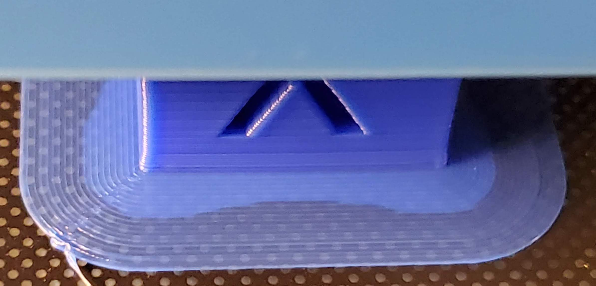
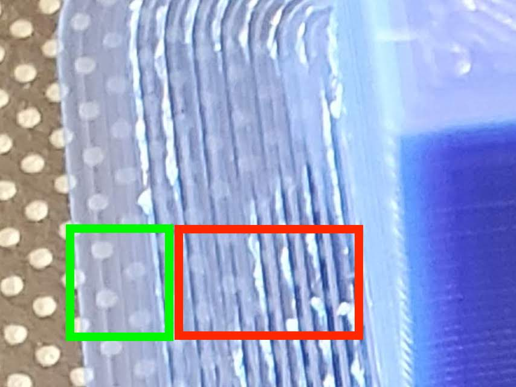
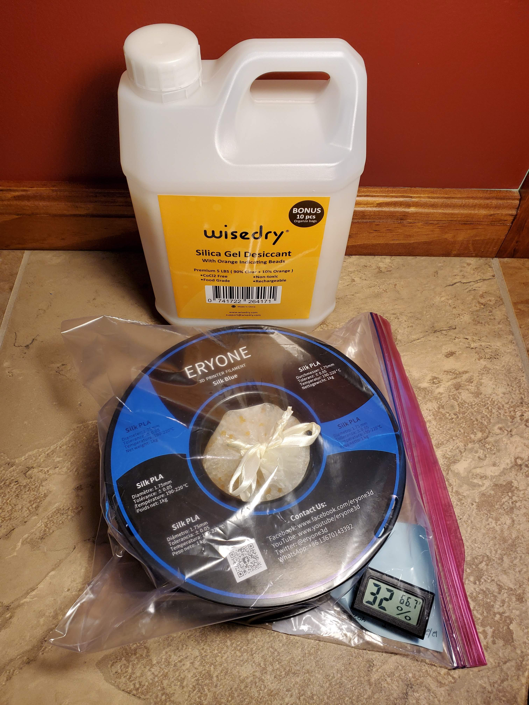
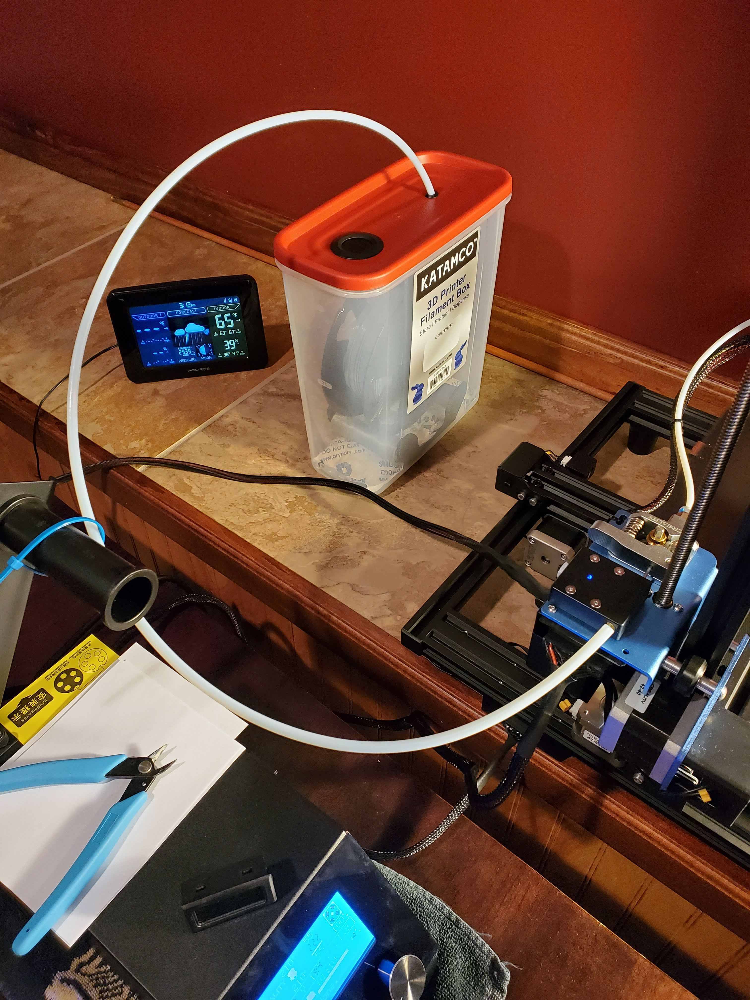

General Guidelines and Check Lists
Do
- Do regularly (after a few hours/before any larger job) level the bed. Be sure to perform the leveling with
the bed at temperature.
- Do print with the lowest bed/end temperatures which still produce quality results and good adhesion in order to
reduce the amount expansion and contraction of the material which can lead to a host of other issues.
- Do use a raft for prints whoes build plate face is not actually intended to be a
bottom/resting face. This is primarily do to the tendency of the first layer to be squished into the build
plate to achieve better adhesion. Heated beds introduce even more variance as they tend to leave that face in
a matt finish and have a tendency to express Elephant's
Foot no matter how well tuned. Both contribute characteristics which alter the uniformity of the first
layer(s). Using a raft elevates your print away from them. Bearings are good candidates for raft.
- Do use a brim for prints whoes build plate face is actually intended to be a
bottom/resting face. Using a brim not only increase adhesion but, offers a tab for application of
"Safety Tape"
. Vases are good candidates for brim.
- Do use a rolling filament holder (see Spool Rocking).
- Do use "Safety Tape". Better safe than sorry.
- Do know your material. Print a temperature tower for any new material(or significant change in ambient
temperature)
before actually attempting to print something with it. This will allow you to access
the the optimal print temperature.
- Do perform a cold pull when changing filament. Additional benefits include potential removal of debris which
has collected in the hot end. Sometimes this is not possible as the filament is locked/stuck in a cold hot end.
In that case, preheat the nozzle, let it cool below the glass temperature of the filament and try again.
- Do monitor the print and tune the Feed Rate if necessary. See
Wobbling at high Z
- Do orientate models on the bed so that the longer side is aligned with the y-axis and the shorter side
with the x-axis. The goal is to put the majority of the short moments on the head as opposed to the bed.
Otherwise the moments of the bed being in-line with the shorter width can induce a the model to wobble
especially the thinner and the taller the print. The primary haul of the Star Trek
USS Enterprise NCC 1701 is a good candidate.
- Do reheat the bed if it's the first print of the day so it has time to thermally stabilize.
- Do use "Random" seam alignment when printing bearings (a seam creates a speed bump).
- Do allow the bed to cool before ~20° before attempting to dismount the piece. My bed temperature is pretty
dialed in. At 55° C pieces stick very well and as it cools to 30° they are automagically released!
- Do use a metallic or high sheen filament when testing and trouble shooting print issues and examine
results under high light so that all imperfections are amplified.
- Do use Silica beads to keep your filaments dry. I got these
which also came with handy drawstring bags.
- Do wipe the nozzle so that any filament buildup does not negatively impact or even fail future prints. I
usually try to do this as soon as a print finishes.
- Do handle filament with care. Ensure you hands are dry and clean.
Don't
- Do not pull filament from a hot extruder. This will greatly increase the risk of pulling alon a
wisp of
filament which could then clog the feed system. This is especially risky with a Bowden extruder.
- Do not print over USB. The data transfer is not fast enough which results in poor prints.
See Slow Data Transfer (USB). Print from SD card.
- Do not handle filament with your bear hands any more than necessary.
Slicing Checklist
- Ensure the model is optimally oriented. If it is not uniform in its x/y dimensions, rotate it so that the
smaller dimension is aligned with the x axis.
- Select the optimal seam alignment.
- Inspect overhangs and determine if and where supports are needed.
- Set the percentage and pattern if infill is needed.
- From the top view transition up through the z-layers with a close eye on the outer walls. Ensure they are not
being build chaotically. For Cura, it may be necessary to enable "Print Thin Walls".
- Is the model a vase? If yes, then enable vase mode. In Cura that means enabling "Spiralize Outer Contour" and
"Smooth Spirialized Contours" under "Special Modes".
Printing Checklist
- Ensure the bed is level. Ensure the bed is level. Ensure the bed is level.
- Double check the target print temperature.
- Preheat the bed if it's the first print of the day.
Changing Filament
- Preheat to 200-220° if not already hot.
- Depress the filament release and feed/push some through manually to induce some extrusion. Then pull the
filament out quick and smoothly. A clean pull looks like this
.
The First Layer is Critical!
A building is only as strong as its foundation... I like to employ brims because for may reasons including
increased build adhesion, reduced warping, nozzle priming and thermal/flow stabilization, afford tabs for
application of "Safety Tape", etc. In addition, they are
great indicators of the levelness of the bed and adhesion quality.
Here we can see good brim lines but poor adhesion. In this case the bed temperature was too low. Raising it just
5° resolved the issue.

Watch to ensure brim lines are laying and bonding well. There should be no gaps or thinning between the
concentric rings. Additionally they should be smooth and uniform.

Ancillaries
Silica Beads
I put these in with my filaments to keep them dry.
wisedry [ 5
LBS ] Silica Gel Beads Reusable Color Indicating Rechargeable Desiccant Bulk with 10 Pcs Organza Drawstring Bags

Humidity Sensors
I put these in with my filaments so I can keep an eye on the humidity.
TAIWEI 6 Pack
Mini Small Digital Electronic Temperature Humidity Meters Gauge Indoor Thermometer Hygrometer LCD Display Fahrenheit
(℉) for Humidors, Greenhouse, Garden, Cellar

Filament Box with Roller
This thing is absolutely awesome and the right price too.
3D Printer
Filament Box Deluxe - Dispenser and Storage Container

{kind=link}